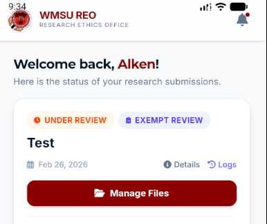
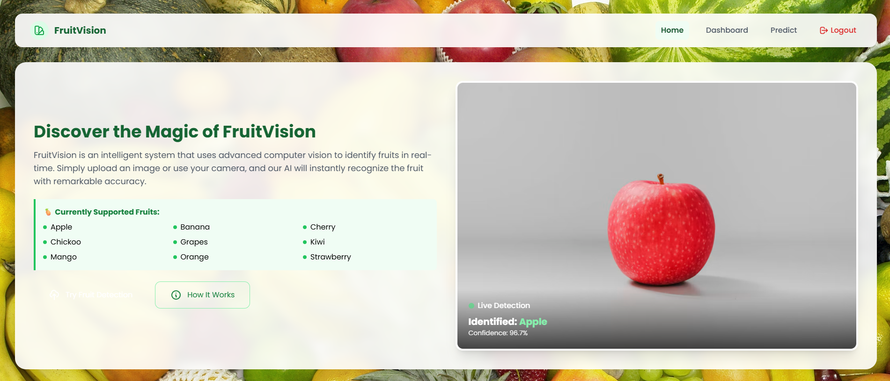
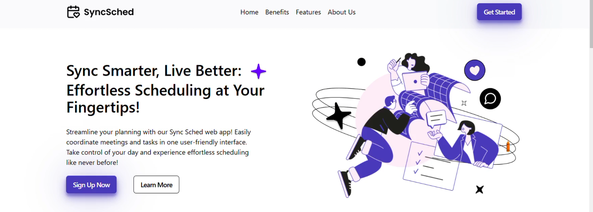
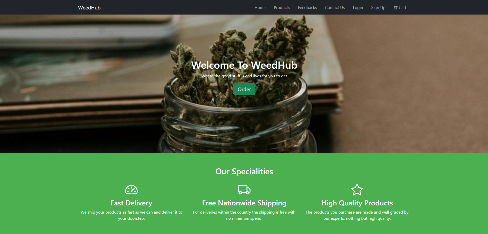
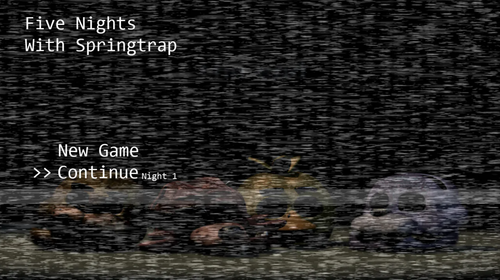

A wound tracking system that runs uploaded photos through a pipeline of AI models to determine a wound's severity, healing status, and type.
AI/ML · In Progress

A Android mobile app for the Western Mindanao State University Research Ethics Oversight Committee — digitizing the ethical review workflow with digital proposal submission, real-time status tracking, and a direct reviewer feedback loop. Built with Flutter.
View Project
A fruit classifier that accepts a photo upload or live camera capture, then uses a trained machine learning model to identify the fruit. Built with Django and machine learning.
View Project
A scheduling system where students can reserve their subjects and time slots based on their college level and section. Built with Tailwind CSS and PHP.
View Project
A weed marketplace mockup/parody built as a frontend-only project — playful storefront UI with product browsing and cart interactions.
View Project
A horror survival game where you play as a night guard at a storage facility built from the renovated remains of the burned-down Fazbear's Fright.
View Project